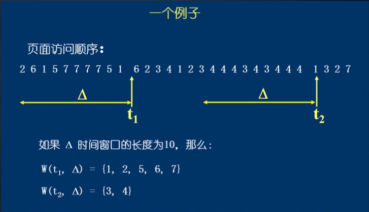
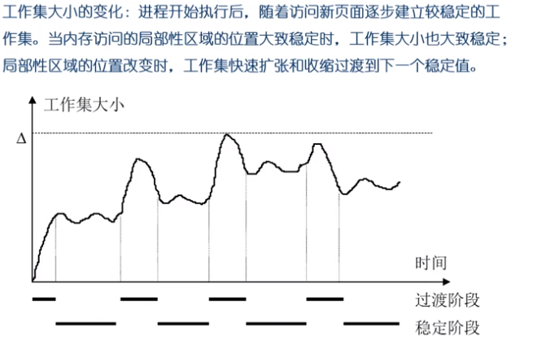

工作集原理
前面介绍的各种页面置换算法，都是基于一个前提，即程序的局部性原理。但是此原理是否成立？
如果局部性原理不成立，那么各种页面置换算法就没有什么区别，也没有什么意义。例如：假设进程对逻辑页面的访问顺序是1,2,3,4,5,6,7,8,9 …即单调递增，那么在物理页面数有限的前提下，不管采用何种置换算法，每次的页面访问都必然导致缺页中断。
如果局部性原理是成立的，那么如何来证明它的存在？如何来对它进行定量的分析？这就是工作集模型

工作集大小的变化：进程开始执行之后，随着访问新页面逐步建立较稳定的工作集。当内存访问的局部性区域的位置大致稳定时，工作集大小也大致稳定；
局部性区域的位置改变时，工作集快速扩张和收缩过渡到下一个稳定值。

常驻集
常驻集是指在当前时刻，进程实际驻留在内存中的页面集合。
工作集是进程运行过程中固有的属性，而常驻集取决于系统分配给进程的物理页面数目，以及所采用的页面置换算法
如果一个进程的整个工作集都在内存中，即工作集属于或等于常驻集，那么进程将很顺利的运行，而不会造成太多的缺页中断（直到工作集发生剧烈变动，从而过渡到另一个状态）
当进程常驻集的大小达到某个数目之后，再给它分配更多的物理页面，缺页率也不会明显下降